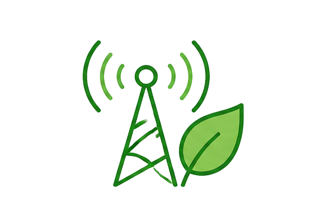
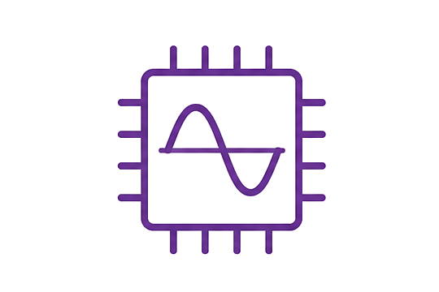

Research Area
COSMIC Lab focus on designing next-generation, energy-efficient RF circuits and systems that meet the demands of advanced computing and connectivity in emerging technologies
These area of research aim toward creating IoT systems that benefit fields such as Precision Agriculture, Biomedical Sensing, and Robotic Applications
Current Projects
Hardware Security

Energy-Efficient Communication

Analog-based Edge Computing
Diverse Technology Integration
Open-Source Design Flow
Workforce Development